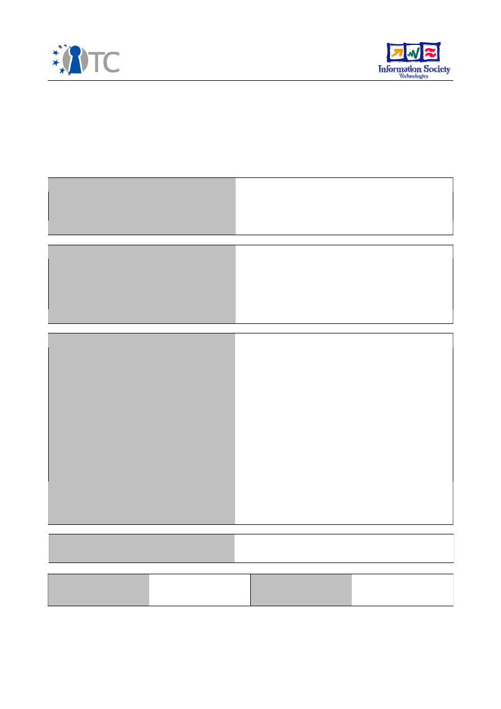

D09.1 Internal beta version for Linux with TC
security function available
(M18) April 2007
Project number
IST-027635
Project acronym
Open_TC
Project title
Open Trusted Computing
Deliverable type
Report
Deliverable reference number
IST-027635/D09.1/V1.0
Deliverable title
Internal beta version for Linux with TC
security functions available
WP contributing to the deliverable
WP09
Due date
April 2007 (M18)
Actual submission date
June 14, 2007
Responsible Organisation
SUSE
Authors
Roman Drahtmüller
Abstract
This document describes the integration and
distribution activities of the first proof-of-
concept prototype of the Open_TC project,
the PET use case scenario. It also outlines the
planned activities for the rest of the project.
Keywords
Trusted Software Stack (TSS), authentication,
virtualisation, L4/XEN, Trusted
PlatformModule (TPM), Live image, PET,
banking proxy
Dissemination level
Public
Revision
V1.0 Final
Instrument
IP
Start date of the
project
1
st
November 2005
Thematic Priority
IST
Duration
42 months
D09.1 Internal beta version for Linux with TC security functions available V1.0
If you need further information, please visit our website
www.opentc.net
or contact the
coordinator:
Technikon Forschungs-und Planungsgesellschaft mbH
Richard-Wagner-Strasse 7, 9500 Villach, AUSTRIA
Tel.+43 4242 23355 –0
Fax. +43 4242 23355 –77
Email
coordination@opentc.net
The information in this document is provided “as is”, and no guarantee
or warranty is given that the information is fit for any particular purpose.
The user thereof uses the information at its sole risk and liability.
Open_TC D09.1
2/9
D09.1 Internal beta version for Linux with TC security functions available V1.0
Table of Contents
1 Introduction, Overview...............................................................................................4
2 The downloadable iso images....................................................................................5
3 Development work, the limitations and remaining problems.....................................6
4 Outlook......................................................................................................................8
5 List of OpenTC project partners involved in the integration of the SUSE PoCP...........9
Open_TC D09.1
3/9
D09.1 Internal beta version for Linux with TC security functions available V1.0
1 Introduction,
Overview
The purpose of this report is to provide an overview over the integration activities
performed to generate the main deliverable, the publically downloadable first beta
version of a TC security functions consuming Linux system.
The mentioned Linux system has been made available in the form of a downloadable
iso image that can be written to a CDROM. The iso image contains a Live system, a
complete Operating System that can be booted from the CDROM, independend and
without any interference with the installed system. This mechanism for evaluating a
functionality or even a product has become an industry standard in the Open Source
Software world for its convenience and usefulness.
The download location for the iso images as well as the documentation that comes
with it is:
ftp://ftp.suse.com/pub/projects/opentc/
or
http://ftp.suse.com/pub/projects/opentc/
The directory also contains README files with introductory information and the so-
called test plan, the step-by-step instruction that leads and demonstrates the
implemented functions. The directory structure should be self-explanatory.
In addition to the download links mentioned above we enclose the iso image with a
live demo on a CD attached to the printed version of this Deliverable submitted on
June 14th.
The development work on this proof-of-concept prototype has been taking
considerable more time and effort than originally anticipated. This report will also
discuss the difficulties and hurdles that needed solving and that contributed to the
delays. Some of the problems are not solved for fundamental reasons; those are
discussed in slightly more detail.
The working group has gathered valuable experiences during this part of the project,
leading to some consequences that will need to be considered for the next proof-of-
concept prototype.
Open_TC D09.1
4/9
D09.1 Internal beta version for Linux with TC security functions available V1.0
2 The downloadable iso images
The consortium members had several options for the implementation of the PoC
prototype based on SUSE Linux technology:
●
Seperate iso images for L4 and for Xen hypervisors
●
One combined iso image that can boot both the Xen and the L4 hypervisor
●
Server- and client side combined on one image, or seperate.
Representatives from POLITO, HP, TUD, RUB and SUSE have decided that the space
constraints are not strong enough to justify the creation of individual iso images, so
that only one iso image was built.
The space constraints have been circumvented using a similar technique as DSL
(Damn Small Linux) uses, which was the base for the initial version of the PoCP that
was demonstrated in Paris for the project review. Automatic package dependency
resolution in SUSE packages allows the specification of a high level package which
then, derived from its dependency tree, attracts all depending packages into the
installation selection in a bottom-up fashion. Software packages that are not needed
by this high level functionality are not selected. Also, directories that are certainly not
needed during the execution of the software, have not been installed from the
packages, or have been deleted after the installation to save space. The package
documentation directories can be found under /usr/share/doc/packages and the online
manual pages under /usr/share/man .
The iso images are being created using a set of scripts, stored on the subversion
server opentc.suse.de (maintained by SUSE). This script pulls packages from a
repository of packages; this repository is filled from the standard set of packages that
are contained in an openSUSE Linux distribution as well as additional packages that
were built specifically for the OpenTC project. There is no distinct barrier between
standard and OpenTC-specific packages, as it is the intention to introduce OpenTC
packages (which are deliverables of the project) into the standard package base of the
openSUSE distribution over the time, as the consortium and the OpenTC project
sponsor approves of it. Using this grid of build scripts, it is possible to customize an
openSUSE system for the specific needs of the OpenTC project. This concept is not
constrained to the consumption and the feedback of the packages. It extends to the
package building mechanism and infrastructure itself as well by leveraging its
integrative compilation facility to save the manual effort.
The download location itself is on the traditional SUSE Linux main ftp site, accessible
using both the FTP and the HTTP protocols. It should be mentioned that the directory is
being mirrored on over 200 FTP servers located across 6 continents, belonging to
universities and other academical or research institutions, internet providers,
commercial organizations as well as private people who can afford the bandwidth.
Mirroring Open Source Software FTP servers with publically available downloadables is
considered good taste. The files contained in the opentc directory come with a
checksum for integrity and authenticity proof in the MD5SUMS file, which itself is
cryptographically signed by
security@suse.de
, the root authority of the SUSE
organization.
Open_TC D09.1
5/9
D09.1 Internal beta version for Linux with TC security functions available V1.0
3 Development work, the limitations and remaining problems
In May 2006, during the workshop that took place in Bochum, the consortium decided
in a meeting lead by SUSE to implement the first PoC prototype based on Damn Small
Linux (DSL) for a variety of reasons. It was clear that this decision came with
consequences, mostly what the development process with a somewhat negative
impact is concerned. DSL is not a fully-featured Linux operating system, but a
framework for strongly customized set-ups. It is highly flexible because individual
components can be modified
before
their compilation from the source code into the
binaries that will be run in the final product. This flexibility may ease the work of a
single group, but it also complicates the concerted effort if it spans across
organizational boundaries because one modification to a package done by one group
of developers easily obstructs work done by another group. Committing changes and
corrections to them, backing out patches and re-applying them constitutes a working
style that cannot be easily translated to the usage of a different, by far more complex
Linux system such as the openSUSE platform. However, this is exactly what has
happened, leading to a complex technical failure that cannot be resolved without
changing the development methods.
To summarize:
●
The operating system is to be seen as a schematically built stack that provides
functionality from below and that imposes requirements from above. The
complexity of this scheme is influenced by the amount of dependency levels
(depth) and the amount of software entities that depend on a single other entity
(width).
●
Packages depend on functions provided by libraries. To know whether or
not a library can fulfil the functional requirements of the binary that links
against it can only be done at compile-time. Exchanging a library in
binary form without a re-compilation of the executable is likely to fail.
●
This is valid analogously for the runtime linking between Microkernel
(->hypervisor) and Linux-kernel, and for the linking between kernel and
libc.
●
The system consists of a mix of Open Source Software and proprietary software
pieces. As a result of the inability to change a package that does not come with
sources, the Open Source Software pieces need to adapt. If an entire chain of
packages needs adoption, already integrated portions should be left untouched
if possible to minimize the overall effort.
●
Licensing of software that is in the process of becoming Open Sourced is a
show-stopper for the external shipment of the product until the process is
complete. We have learned that relying on a consortium partner's legal
department was a disadvantageous experience.
●
Two reference platforms have been defined on which the PoC prototype was
supposed to run: The Lenovo T60 and the HP NX series. However, both of these
computers are equipped with different revisions of hardware chips inside, even
though the model name remains the same. A hardware driver for one T60 may
work well, but may fail on another T60. Therefore, the definition of the reference
platform was a clear mistake. To circumvent these difficulties, SUSE intended to
run the PoC prototype on as many hardware platforms as possible already from
the start. Nevertheless, it still can happen that the PoCP does not run on a
specific series of a T60 or an HP NX.
●
Porting work that has been done on the DSL version of the PoCP to the
Open_TC D09.1
6/9

D09.1 Internal beta version for Linux with TC security functions available V1.0
openSUSE platform was expected to save time and efforts. However, “grown”
development practice and the resulting lack of traceability of changes to
individual packages in DSL as well as the need to apply fixes to bugs and
problems to the DSL port have resulted in estimatedly twice or three times the
amount of work on the SUSE port compared to initial estimates, ultimately
leading to schedule slips.
●
A software development project must have a coordinated language for project
management. As an example, going from the alpha phase of a project into the
beta phase should directly mean that all features must have been implemented
up to that point (this means that all relevant packages have their version
frozen). The transition from beta to release phase means that no minor bugs
such as cosmetics are being fixed any more, updates of all kinds should be
expected to introduce more problems than they expect to fix.
A lot of the points from above has either been ignored or even knowingly violated
during the development of the SUSE port of the PoCP – tremendous strength of will
and much personal energy was invested by all involved partners to complete the work
successfully (the partners are named in the table at the end of this document – major
pieces of work have been performed by the persons mentioned in the table.). Some
weaknesses could not be overcome completely, though:
The L4 part of the SUSE-based PoCP may under some circumstances fail to launch the
firefox browser. This is the result of a negative side effect of a trick to overcome
version conflicts between four software layers: L4-kernel, L4-Linux, glibc with runtime-
linker, and java-rte parallel to firefox. The availability limitations of versions of two
distinct packages in this stack bring about a version conflict that cannot be fully
resolved. The occasional firefox launch failure was chosen as an optimum in this
problem field by the working group.
Due to the absence of these version conflicts within the Xen part of the PoCP, the Xen
part does not suffer from them, either.
Open_TC D09.1
7/9

D09.1 Internal beta version for Linux with TC security functions available V1.0
4 Outlook
The constraints above clearly indicate that responsibilities for both the integrative
value-add and the corresponding project management is still insufficient to achieve
the objectives at an acceptable degree of effectiveness and efficiency. Synergy
between WP09 and WP07 (methodologies as well as EAL5 feasibility study) must be
leveraged during the upcoming work shop in Seddin/Potsdam at the end of June 2007
to provide education about proper software development methodologies and
practices, the usage of a common development platform and more direct
communication among the developers in the group. The ideal world in which an
operating system is being built and assembled is well-known, and the willingness to
invest efforts into getting there is present, arising positive expectations for the state of
the 2007 Proof-of-concept prototype later this year.
Open_TC D09.1
8/9
D09.1 Internal beta version for Linux with TC security functions available V1.0
5 List of OpenTC project partners involved in the integration of the
SUSE PoCP
POL Politecnico
di Torino
Gianluca Ramunno, Davide Vernizzi
HP Hewlett-
Packard Ltd
Wolfgang Weidner, David Plaquin
TUD
Technische
Universität
Dresden
Carsten Weinhold, Bernhard Kauer
RUB Ruhr-
University
Bochum
Patrick Stewin
RHUL Royal
Holloway and
Bedford New
College
Stephane Lo Presti
SUSE Linux
Products GmbH
Torsten Duwe
Open_TC D09.1
9/9